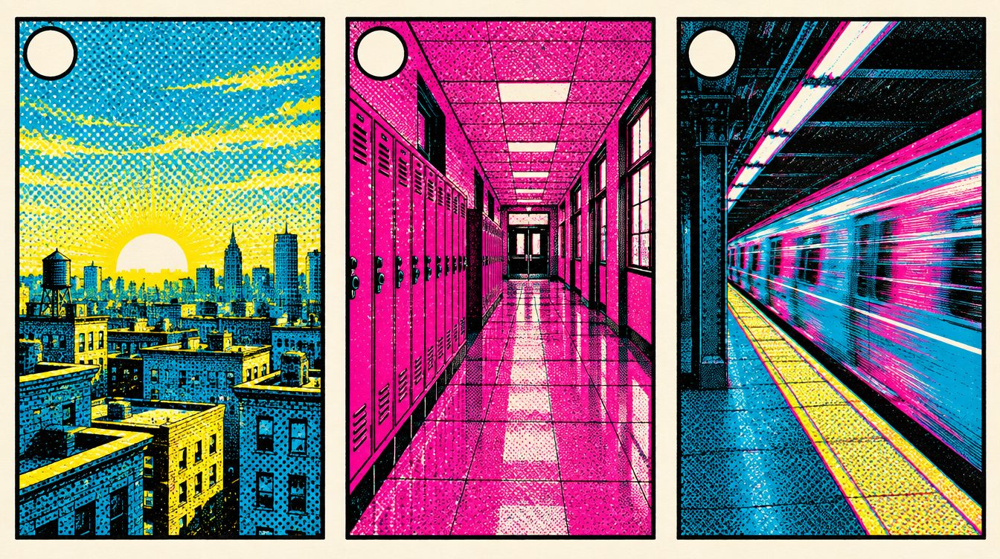

Today's viewing cues
Watch with a question.
Four clips, about sixteen minutes of first-pass viewing. Open a clip from its link; it starts at the listed time. Stop at the out point.
0:00 to 9:00 · 9:00 of viewing · video is 9:34 long
Spider-Man: Into the Spider-Verse, the first nine minutes
Sony Pictures Entertainment
When the drawing rate changes, who changed, and what did it tell you before anyone spoke?
First pass at 10:02 with no annotation. Lenses two and three after the forest clip, about 10:16. Stations reuse the same nine minutes in thirds.
0:00 to 2:09 · 2:09 of viewing · video is 2:09 long
Spider-Man: Into the Spider-Verse, the forest swing (Another, Another Dimension)
Sony Pictures Entertainment
How often does the drawing change under Miles, and under the older Spider-Man beside him?
Lens one at 10:12. The one scene where the frame-rate contrast is on record: Miles on twos, Peter B. Parker on ones, swinging together. The first nine minutes never put them side by side.
0:00 to 2:40 · 2:40 of viewing · video is 2:40 long
Spider-Man: Into the Spider-Verse, official trailer
Sony Pictures Entertainment
Which three visual devices would let you name this film from a single frame?
The calling-card pass, about 10:40. Ben-Day dots, misregistered color, comic panels.
0:00 to 1:39 · 1:39 of viewing · video is 1:39 long
Kaiju No. 8, official trailer
Crunchyroll
Where does the drawing rate change, and what is it buying each time?
11:16, played once clean and once with the question. 2D characters over 3D destruction, seam left visible.
Station windows, 10:48 to 11:06

Frame stepping on YouTube: pause, then the comma and period keys move one frame back or forward.